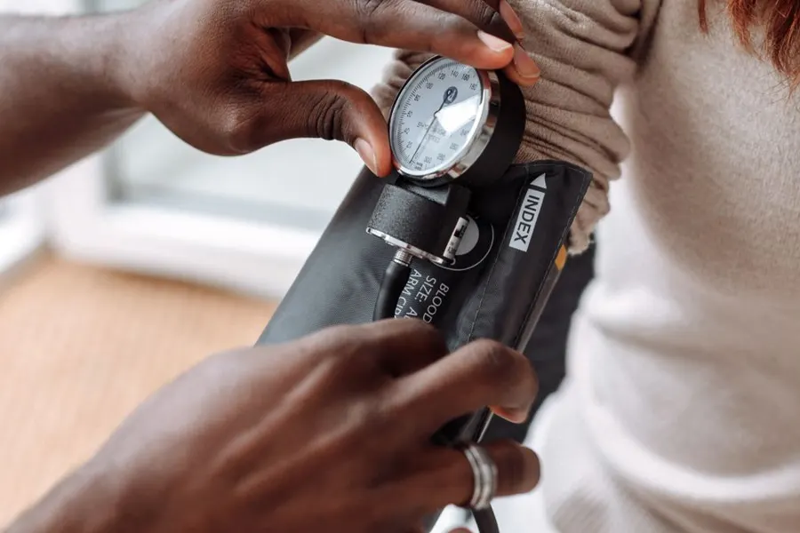

La fiche du jour
Mal au dos au travail : que faire pour éviter que ça s’installe ?
Retrouvez la fiche MACASANTÉ validée consacrée au mal de dos au travail.
Lire la fiche Édition du 16/10/2026Une information santé fiable et accessible à tous.
Contenus médicaux validés · Sources citées
Connexion à l’Assistant…
La fiche du jour
Retrouvez la fiche MACASANTÉ validée consacrée au mal de dos au travail.
Lire la fiche Édition du 16/10/2026
Cœur & circulation → Femmes & grossesse →
Femmes & grossesse →
 Enfants & parents →
Ados →
Santé au quotidien →
Santé mentale →
Digestion & urinaire →
Os & articulations →
Cancer →
Enfants & parents →
Ados →
Santé au quotidien →
Santé mentale →
Digestion & urinaire →
Os & articulations →
Cancer →
 Seniors →
Seniors →Photos d’illustration · Crédits photographiques
30 secondes santé avec Max